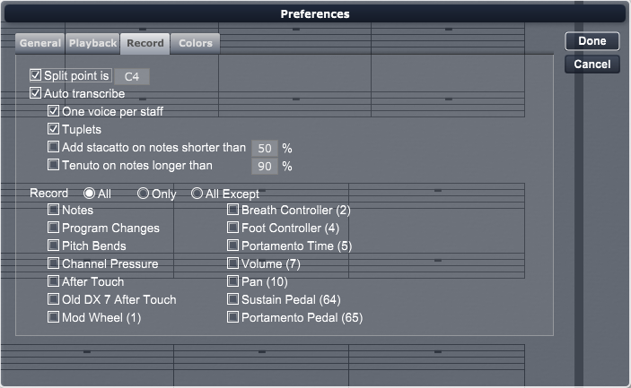

There are numerous elements in the RecordTab, as follows.
Whenever you perform real-time recording, Overture interprets the incoming MIDI data using these settings.
Using the Split Point Option
Check the Split point is check box if you want Overture to split incoming MIDI data between two tracks automatically. Use the corresponding numerical to define the MIDI note value of the split point (C4=middle C). This option is particularly useful for correctly notating two-handed piano parts on a grand staff.
To use this option, your score must contain two adjacent staves; the top staff with a treble clef and the bottom staff with a bass clef. Overture always assigns the MIDI note value in the split point numerical to the treble staff. When you record, you can activate a measure in either the treble staff or the bass staff; Overture correctly divides the notes between the two staves.
Using the AutoTranscribe Option
Check the AutoTranscribe check box if you want Overture to transcribe any recorded MIDI data automatically. Uncheck the box if you want Overture to display recorded MIDI data as raw data in the Score View.
If you select the AutoTranscribe option, you also have the choice of transcribing the recorded MIDI data as single or multiple voices (see “Using the One Voice Per Staff Option” below).
Generally, automatic transcription is useful for most simple recordings. You may find it beneficial to turn off auto transcription if you're recording rather complicated tracks with multiple voices. When auto transcription is off, Overture displays the recorded data as raw MIDI data in the Score View. You can edit and selectively transcribe sections of raw MIDI data as discussed in Transcribe.
Overture notates all auto transcribed data in the Score View using the transcription quantization value shown in the Tool Bar. For more information about setting a transcription quantization value, see “Transcription Quantize Amount Button.”
Using the One Voice Per Staff Option
You can enable this option only if you check the AutoTranscribe option first. Check One voice per staff whenever you record a track that requires only a single voice per staff. This keeps Overture from interpreting any sloppy playing as multiple voices. If you want to record a track with multiple voices, then leave the option unchecked.
Using the Tuplets Option
You can enable this option only if you check the AutoTranscribe option first. Check Tuplets whenever you record a track that may contain tuplets.
Using the Add staccato and Add legato Options.
Check these if you wish Overture to add these marking on notes that sound differently from the notated values.
Using the Record Filters
Use the three radio buttons to tell Overture whether you want to record all events, only the events selected in this dialog box, or all events except those not selected in this dialog box.